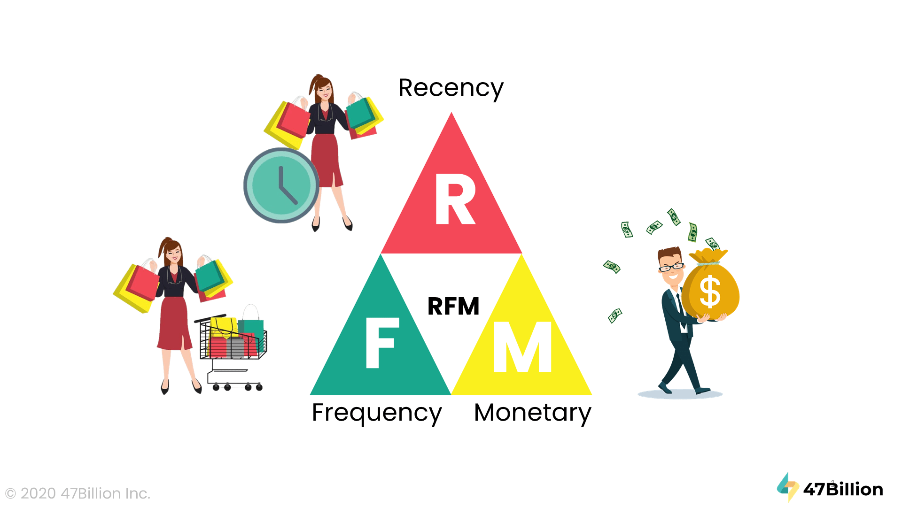
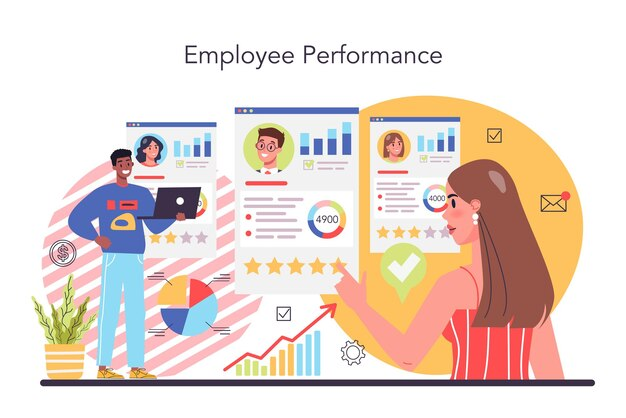

Strategic Case Studies

Customer Segmentation & Churn Risk Mitigation
Python Power BI RFM ModelingImpact: Quantified $224K in revenue-at-risk by developing an automated RFM segmentation pipeline. Translated behavioral data into a strategic roadmap that identified a 76% revenue concentration among top-tier customers.
View Case Study
Retail Sales Analytics & Growth Engine
Advanced SQL Power BI ETLImpact: Engineered an end-to-end sales tracking engine to identify underperforming regions and growth opportunities. Optimized data retrieval processes using advanced SQL window functions.
View Technical Docs

HR Intelligence: Performance & Retention Modeling
Python Automation Statistical AnalysisImpact: Reduced manual reporting time by automating data cleaning for HR metrics. Delivered insights into employee attrition patterns, allowing leadership to implement data-driven retention strategies.
View Repository